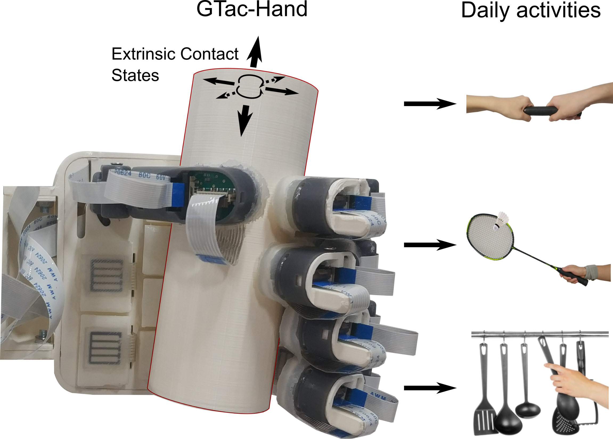

In many interaction and manipulation tasks, robots need to estimate the state or properties, such as extrinsic contact states (ECSs), on the object being manipulated. Tactile sensing is an essential sensor modality for robots to acquire this relevant information. } In this article, we present a robotic hand integrated with tactile sensors that combine two force sensing principles as skin-like heterogeneity, piezoresistive, and Hall effect, and can obtain normal and shear contact force feedback simultaneously from the fingers and palm, resulting in 285 tactile sensing measurements at a rate of 150 Hz. In the contact-rich manipulation task, there would be complicatedly coupled contact relationships between the robotic hand and the grasped objects during external contact. Section-wise features (SWFs) are implemented to leverage these tactile features by means of incorporating distributed forces, and acquiring the dynamic time-varying rate and tactile events. A quantitative evaluation of the performance of recognizing nine ECSs is provided such as 99.6\% accuracy and the SWFs resulted in a significant reduction (30\%) in the error rates. Given the human-like tactile sensing integration design and high-quality real-time models of patterning and learning, the robotic hand can perform challenging tasks, such as delicate object grasping, object handovers, and ball-hit recognition.
This project is supervised by Prof. Haoyong Yu in Biorobotics Lab @NUS. This work was supported by Agency for Science, Technology and Research, Singapore, under the National Robotics Program, with A*star SERC Grant No.: 192 25 00054.